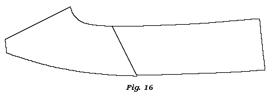
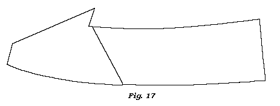
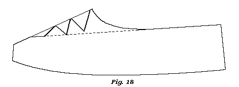

Women�s Shoes, or Slippers.
The dimensions of the foot are to be taken the same as directed for the men�s.�If there is to be a wood heel of any height, you must choose the last to have a hollow in the waist, and a spring or pitch in proportion to the height of the heel.
In the next place, you must fit the patterns to the last; observing the same
directions as given in the men�s.�Some like the quarter long, some short, and
some middling.�Some like the quarter deep behind, and some rather low; therefore a general rule cannot be observed, but you must be directed by the customers.�A wood
heel should not have the quarter so deep behind as a flat heel.
The quarter of a Morocco, kid, or any wove upper slipper, from two to two and a quarter deep behind is sufficient; but to strong leather shoes, or slippers, the quarter ought to be deeper as the substance of the shoes and the wearer require them.
In general, we find the wearers of Spanish, Morocco, kid, or any kind of wove slippers, wish the length of the front of the vamp of the same length, whether the foot is long or short.
The common wearing length now in use from the open part of the vamp to the toe, is from two to three inches; therefore the length of the whole vamp has no need to be more than from three and a half to four inches long. That is, that part of the vamp which joins the quarter to be from an inch to an inch and half from the open part of the vamp; for, if the joining of the vamp and quarter should be nearer to the front of the vamp than above directed: the join will be more liable to tear.
From the above length of the vamp, the length of the quarter must be in proportion to the length of the foot. The quarter. should be something deeper behind than at the side, even to those that desire the quarter straight; for, if the quarter be cut in a straight line from the sweep of the front of the vamp to the end of the heel seam, it would appear in the slipper rather of a rise or swell in the middle than straight; therefore the quarter should be from an eighth to a quarter of an inch lower at the side than behind, and let it be in a gradual sweep from the top of the heel seam to the front of the vamp, as per fig. 16. So much for hollow vamps.

But in vamps with peaks in front, (to which some old people are still partial, from being the fashion when they were young,) the quarter comes to the angle the peak-makes with the vamp, as in fig. 17.

The Grecian or sandal form should be cut as per fig. 18. A ruler placed along the upper part of the quarter, and within two inches of the toe, will give the line of direction, as a b on the vamp, where to cut the scollop from; the end of the quarter must form one of them, as per fig.

Whatever form or shape fancy may invent in future, they may be deduced from the above modes: And as to all shoes to tie, they are similar to those of the men�s; to which refer.
In all women�s work, except coarse leather pumps or shoes, you must be careful to cut them even, smooth, and exact, to what you intend them to be, for when they are bound there is no future remedy.
All Spanish, Morocco, and kid skins are to be cut the same as directed to cut men�s upper leathers from the calf skins.
In all wove uppers and linings, the width of the vamp and length of the quarter are to be taken in the length of the piece, whether it be velvet, silk, jean, &c.
The quantity to be turned in by the binder, ought to be prickcd off at the heel seam and side seam of the quarter pattern as well as the vamps, if all the lining be cloth, that the binder may not turn in more nor less; otherwise you will not be sure to have the real length of the quarter, or vamp.
Leather lining in the quarters is to be cut close to the patterns; for the binders do not not turn any in, but let them meet at the edges.
In all Spanish, Morocco, or any kind of leather that is to be closed at the sides
and heel seam and bound with leather, certain allowance is to given in the
vamps and quarters, that you may retain the real length of the quarter and vamp;
but if they are to be bound with silk, there will be no need for any allowance,
because the binder in this case only lets the edges meet.
Women�s Half Boots to lace.